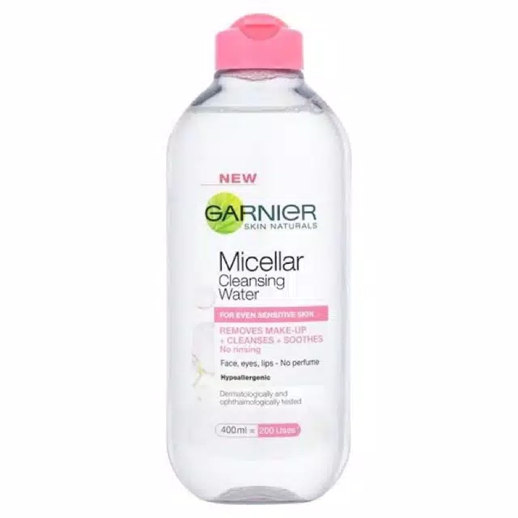
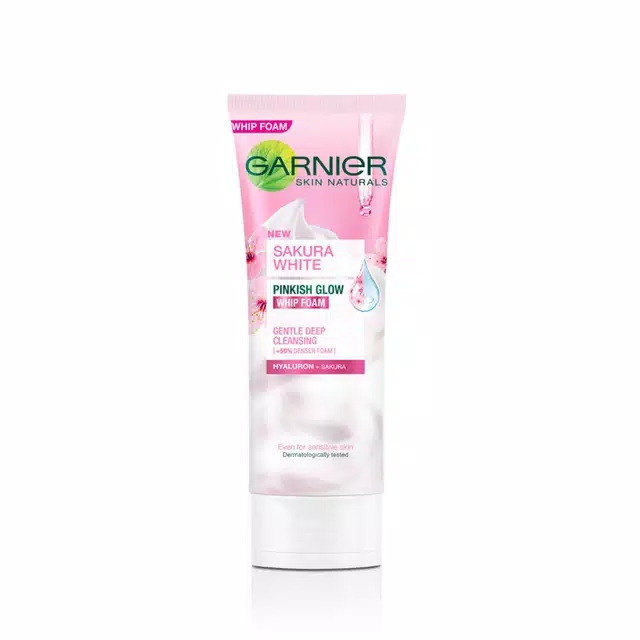
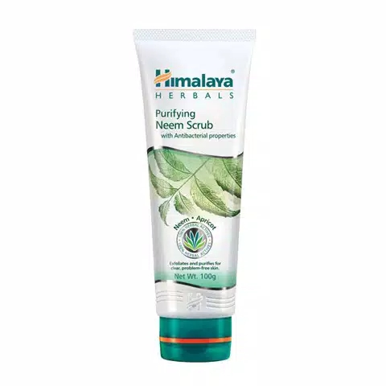
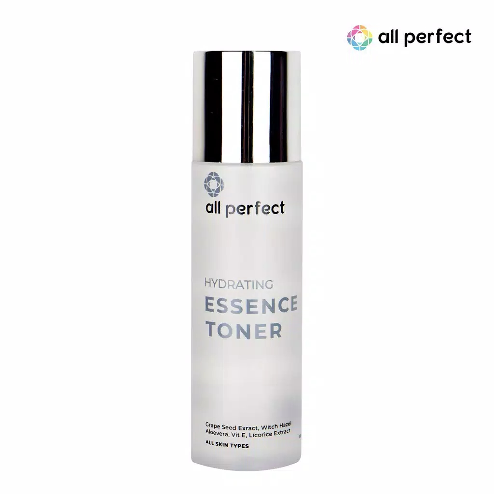
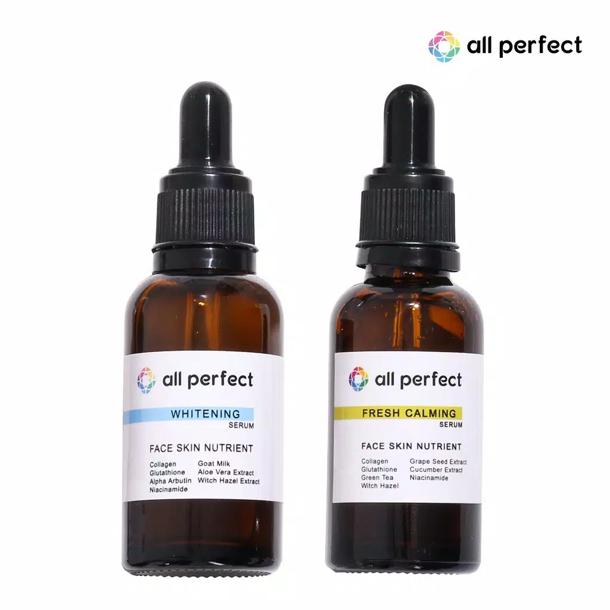
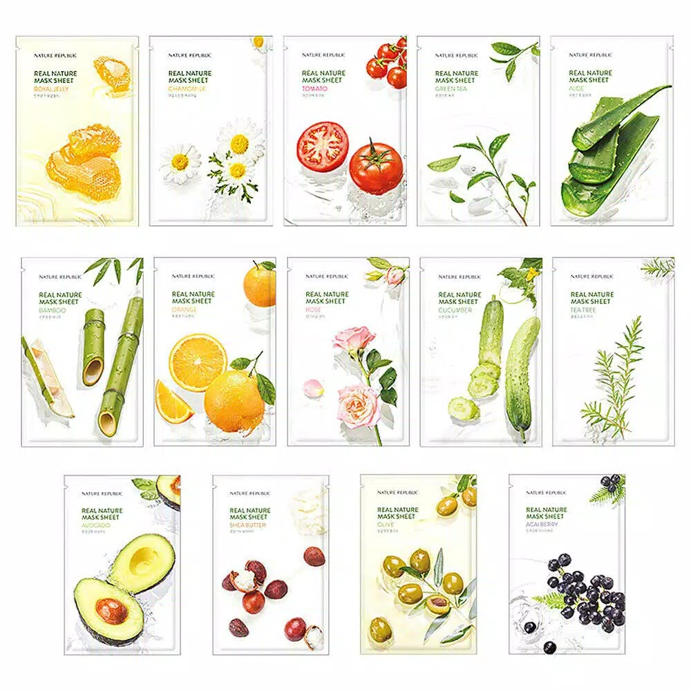
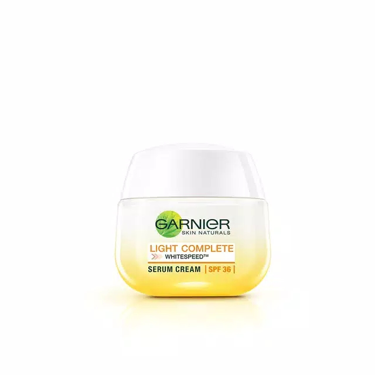
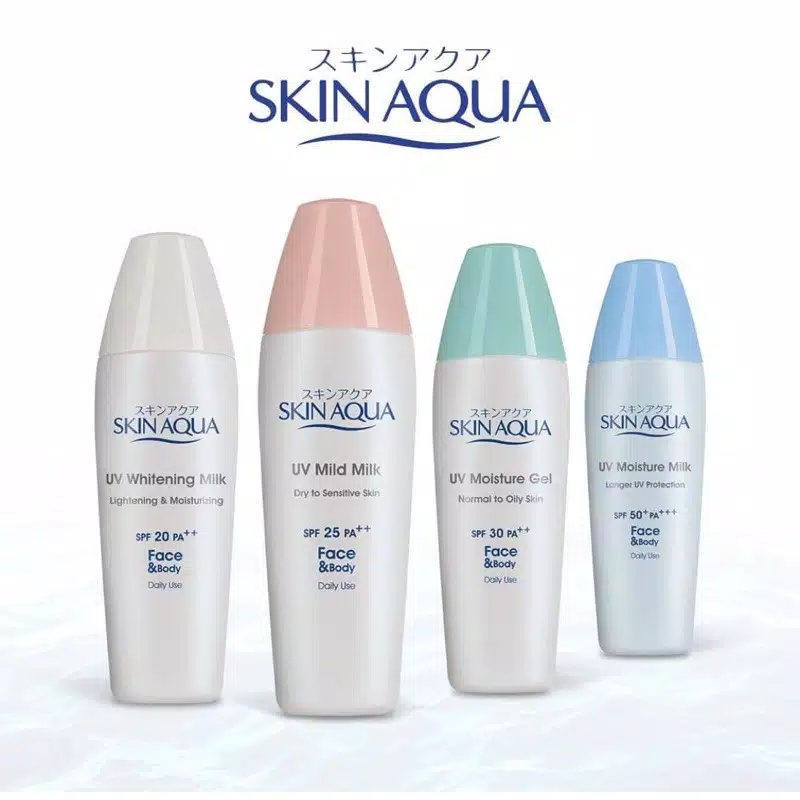
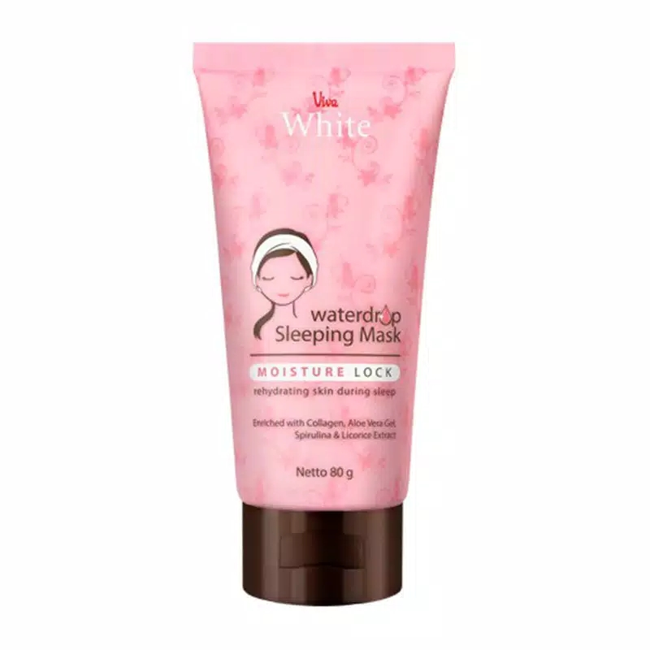

Wanna some relaxing music ? ?
Piano here
Guitar here
Where U go?


Another Related Topic :
Follow us


Introduction...
Pandemi gini bikin mika tambah kusut aja, hayo siapa yang jarang banget buat ngerawat muka nih? Masa mau ketemu doi muka tetep kusut kan gaasik dikira kurang tidur ntar terus malah disuruh tidur dulu eh tapi ga bareng ya… bagi kalian kaum mending muka kusut juga masalah apalagi kalian kaum ga ber doi masalah tuh niat mau pdkt ntar dibilang ih mukanya kusut kurang tidur yee padahal mah kurang dirawat, gagal deh kenalan ama si dia... oke deh daripada kelamaan langsung simak kuy!!
Pada kesempatan kali ini, min dapet dapet ilmu dari kawan nih kita akan belajar bersama mengenai urutan pemakaian skincare yang benar agar skincare yang kita pakai bisa bermanfaat dan tidak mubadzir, selain itu jika pemakaian skincare dengan urutan benar dilakukan maka kandungan yang ada dalam skincare akan bekerja lebih efektif ke kulit kita eh ntar min ini topic cewe min katanya universal? Nah topic ini bisa loh digunain kalian kalian kaum adam. Kalian tau gak sih? Kalo kita salah dalam pemakaian skincare, misal urutannya terbalik maka akan mengurangi esensi atau manfaat dari skincare itu sendiri atau bisa dibilang ga work di kulit kita nih terutama cowo cowo yang ga berdoi pasti gatau, jadi buang-buang uang kan? Maka dari itu tulisan ini dibuat untuk membantu kalian para cowo-ciwi yang masih kebingungan apa aja sih urutan skincare yang benar. Nah cirinya kita harus memakai skincare dari yang bertekstur paling ringan ke tekstur yang kental. Hayooo kalian udah bener apa belum yaa kira-kira? Yuk belajar bersama
Nah dibawah ini kami akan memberi tahu urutan skincare dengan kondisi pemakaian skincare lengkap ya, jika dari kalian ada yang mau ngeskip salah satu skincare itu gapapa banget lohhh, kalian ga wajib memakai seluruh skincare untuk wajah kalian, pakai sebutuhnya sajaa yaa. Okay berdasarkan berbagai sumber yang telah kami kutip, urutan pemakaian skincare yang benar dari basic atau dasar adalah
- Cuci muka
- Moisturizer
- Sunscreen
ingat kawan itu hanya basicnya saja, kaum mending simak sampai habis ya karena masih banyak stepnya harap tenang dan sabar hehe

Pertama Cleanser oil atau misellar water remover
Step pertama ini dipakai untuk menghapus make up jika seharian penuh kita memakai make up di wajah kita, so step ini biasanya dipakai pada night routine skincare. Rekomendasi clean remover yang dapat dipakai yaitu dari clean removernya Garnier, dan Pixy.

Kedua Facial wash atau facial foam
Tujuan mencuci wajah menggunakan facial wash atau facial foam adalah untuk membersihkan kotoran di wajah sekaligus untuk mempermudah penyerapan skincare selanjutnya. Rekomendasi facial wash yang affordable dan aman yaitu Garnier facial wash yang merupakan produk lokal.

Ketiga Scrub
Jika kalian ingin memakai scrub, silahkan pakai setelah mencuci wajah kalian yaa, dan scrub sebaiknya dilakukan hanya satu kali dalam satu Minggu. Dipakai untuk mengangkat sel kulit mati dan kotoran dalam wajah secara mendalam. Rekomendasi scrub produk lokal adalah Himalaya.

Keempat Toner
Fungsi toner adalah untuk menghydrating wajah, atau melembabkan wajah karena setelah mencuci muka biasanya kulit akan terasa kering jadi toner sangat penting untuk mengembalikan pH kulit wajah. Rekomendasi toner lokal adalah toner all perfect.

Kelima Serum
Serum sudah tidak asing lagi dikalangan para pengguna skincare, fungsi serum bermacam-macam tergantung tipe dan jenis kulit. Ada yang berfungsi untuk menghilangkan kemerahan, mengontrol minyak, melembabkan kulit, mencerahkan, mengurangi bintik hitam, dll. Rekomendasi serum lokal adalah serum all perfect, variant whitening untuk kulit tipe normal to dry dan variant fresh calming untuk tipe normal to oily.

Keenam Sheetmask
Sheetmask merupakan produk yang tidak wajib digunakan yaa, sesuai kebutuhan saja. Biasanya sheetmask dilakukan seminggu dua kali, tujuannya untuk melembabkan kulit, merelaksasi kulit, dan manfaat lain yang kita tahu bahwa manfaat tiap sheetmask berbeda beda. Rekomendasi sheetmask yang efektif untuk segala permasalahan kulit adalah nature republic.

Ketujuh Day/Night Cream
Day/Night Cream dapat kita pakai di urutan skincare nomor dua dari bawah, jika kita hendak memakai eye cream maka lebih baik dipakai sebelum menggunakan day/night cream. Rekomendasi day/night cream produk lokal yaitu dari Garnier.
 Terakhir kedelapan Sunscreen/Sleeping mask Jadi step ini sangat penting, harus digunakan yaitu sunscreen untuk pagi dan siang hari. Pemakaian sunscreen bertujuan untuk melindungi kulit wajah dari efek negatif sinar UV dan mencegah radikal bebas, selain itu juga bertujuan untuk mencegah efek negatif sinar UV seperti penuaan dini. Jika kandungan day crean sudah ada spf nya maka tidak perlu menggunakan sunscreen yaà, kembali lagi ke statement awal gunakan sebutuhnya saja. Rekomendasi sunscreen yaitu skinaqua. Untuk malam hari boleh memakai sleeping mask yang bertujuan untuk menjaga kelembapan kulit, dan beberapa ada yang bertujuan untuk mencerahkan kulit di malam hari. Rekomendasi sleeping mask yang ampuh yaitu Viva drop sleeping mask.
Kesimpulan~
Jadi bagaimana sudahkah anda anda capek dan pusing hehe... itu namanya perjuangan kawan biar nantinya kalian bisa tampil glow up tanpa disangka sangka sebenernya mudah asal mau saja hehe... jika budget terbataspun gamasalah pakai yang basic saja.
ingat kawan setelah sekali pakai repot repot bukan berarti langsung berubah perlu proses loh ya hehe emangnya dicat, dicat aja perlu beberapa proses hehe so jangan malas malas yak kawan untuk ngerawat diri sendiri. semoga bermanfaat tips nya terimakasih telah menyimak stay safe stay health and stay happy see u